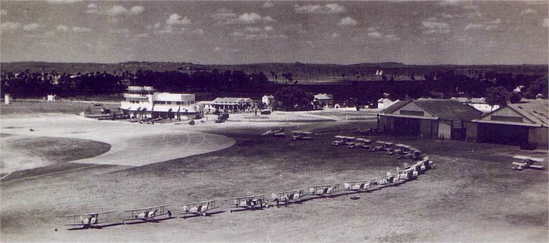
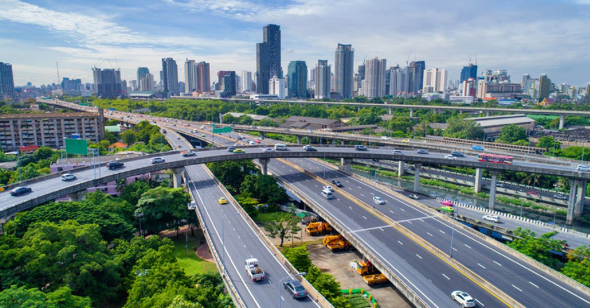

WELCOME TO ANUKTHA AVENUES
Hyderabad
Telangana has changed into an upheld objective for IT-based relationship, as Andhra Pradesh prepared for it before the detachment. The improvement of Hyderabad, unequivocally, has been coordinated with the movement of the state. Thus, the city has been made and its construction has changed. The occupants of Hyderabad would now have the choice to march to five star affiliations and supporting utilities being set up here. The movement joint effort of the city that was started over twenty years sooner has 'terraformed' the old Hyderabad and is quickly changing over it into an astounding city.
A city with rich history and heavenly past structures is steadily becoming host to likely the most present day structures, a blend of both the previous domains and the new corporate disturbance. To help Hyderabad's new development, the then Supervisor Minister of Andhra Pradesh Chandrababu Naidu successfully bid for the Public Games in 2002 and the Afro Asian games in 2003, close by a strong bid to make a Formula One circuit in the state. These endeavors incited the headway of compelling games structure in Hyderabad. The Indian Establishment of Business (ISB) and IIT were furthermore gotten comfortable, a near endeavor to help current preparation.

The resulting metropolitan agglomeration as of now has a space of in excess of 800 square kilometers and involves Hyderabad and various locales enveloping it. The city people are dependent upon to outperform hundred and 36 lakhs in 2021. As progress got pace around the completion of the nineties, the old city declined and the more forward-thinking periphery areas started to obtain obviousness. By 2001, the city was the sixth greatest metropolitan agglomeration in India; and during the last decade it selected an improvement of 32%.
Made land on the edges of Hyderabad has been utilized for huge extension improvement right outer the Cybercity. The real city is gone to transform into the trailblazer in e-organization. It has been expected concerning Hyderabad that it would transform into a fundamental information based society in the coming twenty years. Quick industrialisation has provoked the development in land costs while simultaneously driving the interest for establishment headway. Business advancement, along these lines, has been moved in the City Association of Hyderabad locale while the city has experienced a pressing factor in private turn of events.
Improvement of the IT Area
Since the 1990s, Andhra Pradesh had been impelling itself as a first class IT district and Hyderabad City, thus, has figured out some approach to draw in experience from affiliations like IBM, Prophet and Microsoft. The Hyderabad Headway Park has seen various IT affiliations enrolling themselves when spaces are free. The target of this erratic outstanding system has been to draw in the right number of affiliations which together would diagram a base aggregate for the city to make as a cutting edge city which would hobnob with Silicon Valley and Malaysia's Sight and sound Super Anteroom.
During the nineties, several drives were taken up by the state government towards progress of the IT locale. These included setting up of IT arranging establishments, drives in e-association, movement of a Howdy Tech city and moving the Thing Improvement Park as an upheld objective for private district affiliations. Steps were then taken significantly further to permit the improvement of an Equipment Park, game plan of an Information Park, and foundation of a cash related region. The state government began tapping assets to put resources into the biotechnology district and, as a fundamental move towards making the region explicit, a Biotech Park was presented.
The inevitable result of these endeavors can be found as different parks. One called Minimal individual Valley has been set up to zero in on appraisal and arranging in biomedicine for present day creation. Inside this valley are likewise settled the IKP Information Park and Alexandria Information Park with spaces of 200 sections of land and 300 fragments of land freely. These parks cover Ameerpet, Medchal, Uppal, and diverse different pieces of the Hyderabad Metropolitan region. The push spaces of examination here solidify antibodies, bioinformatics, seeds, and so forth irrefutably the best in general drug and examination firms have game-plan their work spaces here.


In like way, a Stuff Park of 1,000 700 spaces of land in the region is in addition being made. The monetary exercises, especially identified with social affairs and related exercises, are amassed in Ramachandrapuram, Patancheru, Balanagar, Uppal, Cherlapalli, Jeedimetla, and Moula Ali. These turns of events, on one hand, added to the monetary improvement of the city and, obviously, are liable for the spatial new development, especially the progression of the encompassing areas.
The Development business Push
Having seen the tremendous capacity of the biotech area, the Public authority of Telangana has begun to zero in on the development business. The city is being raised capably to Indians and non-Indians the same and is raised to change into a basic voyager region attributable to its space and ordinary assets. The public authority expects that it ought to change into a colossal travel local area among Europe and the Far East. As shown by the development business procedure of the express, the then Andhra Pradesh was relied upon to "be a basic development business objective in India drawing in over 2.5 million overall sightseers and around 70 million nearby voyagers" by 2020. The current status government hopes to accomplish this objective by fostering the natural qualities of the state and creating a mind boggling traveler foundation.
Advancing System Improvement
On the side of present day new development, the city of Hyderabad has furthermore started to encourage establishments to help it. The system improvement is based on tremendously huge locales including roads, flyovers and cityscape, and further creating water supply. Since 2007, eight critical undertakings have been done in the Hyderabad improvement plan. These join the culmination of flyovers at Rajiv Gandhi Circle, Green Grounds Convergence and Chandrayanagutta. The water supply has moreover been updated by the redirection of Krishna water to Secunderabad, improvement of additional extra rooms and fulfillment of Krishna Drinking Water Supply Adventure Stage II.
It ought to be seen that the basic surface wellsprings of water in Hyderabad are Osmansagar on Stream Musi, Himayatsagar on Esi Stream, Manjira Stream and Krishna Stream. Water social occasion, sewage and water supply are essentially furthermore made.
Headway of Supporting Establishment
To oblige extended traffic and people inflow, the state government has discovered a way various approaches to additionally foster the system.
The System Organization of Andhra Pradesh Limited (INCAP) was set up in 2005 to coordinate the improvement of Andhra Pradesh with everything taken into account. The state government had a 40% stake in it and it had been set up to deal with the headway of air terminals, roads, structures, clinical prosperity and all metropolitan establishments in an arranged manner. The Public authority of Telangana has begun the improvement of the Hyderabad Advancement Path Limited, zeroing in on the "beautification of traffic islands on Outer Ring Road Undertaking" in Hyderabad City. At the point when totally made, this errand will convey Hyderabad potentially the most present day metropolitan regions to the extent of establishment.
Where accessibility is concerned, one of the wonderful endeavors is the Nehru Outer Ring Road or ORR of Hyderabad, which is an eight-way ring road turnpike with an edge of a hundred and 58 kilometers. It interfaces Howdy Tech City, Nanakramguda Financial region, Hyderabad Overall Air terminal, Data Park, Hardware Park, Games Town, Singapore Money related District and State Police Establishment. The road has been planned to allow vehicles to go at higher speeds and has unimaginably additionally evolved accessibility and diminished gridlock in the vein roads of the More important Hyderabad Region. Plans to additionally foster the Inside Ring Road are set up and they would decongest the traffic altogether further. The longest flyover in the country is now evolved to allow quick induction to the air terminal. The city is connected with all critical parts in the west and south with a conspicuous association of roads. There is also a set up rustic rail course system called Multi Particular Vehicle Structure – operated by Indian Rail lines. It partners various stations in and about Hyderabad city. A Quick Travel Structure is as of now being dealt with and it will give Hyderabad its own metro train office to further develop accessibility. As of now, Telangana State Road Transport Venture works transports inside the city.
Adding Some Green
Building rules have been adjusted in 2013 and require the headway of a support zone in housing social orders to allow the improvement of organization roads and direct permission to extended roads will be open just through organization roads.
To deal with the idea of assumptions for regular solaces, the Hyderabad Metropolitan Progression Authority is discovering various approaches to really take a look at a wide range of defilement. It has been seen that the particulate matter in (air defilement) is the most limit in the Charminar district. The state workplaces hope to decrease air defilement in various bits of the city likewise and have set out on a longing assignment to brace metropolitan greening in neighborhood, institutional grounds and private territories. Afforestation attempts are being made in barren wilderness. Open districts guaranteed by normal and military establishments are being used to make forest areas.
Agro officer administration and more unobtrusive nurseries are being progressed; greenbelts are being set very close by roads while lake parks, garage parks and walkway gardens are being set up to an enormous degree. A Metropolitan Lake recovery plan has furthermore been established to restrict water tainting. A drive to make the Musi stream tainting free is in like manner in progress. The Hyderabad government realizes that plausible improvement is basic for the somewhat long practicality of its undertakings and subsequently plans have been made for the coming twenty years to meet this heap of goals.
Considering everything
The Hyderabad Metropolitan Headway Authority is driving the city to transform into the accompanying Silicon Valley. The State Organization of Telangana, and the Public authority of Andhra Pradesh before it, have put resources into surprising measures of energy to cultivate the city's present system. The govt. has orchestrated amazing advancement in the More conspicuous Hyderabad region and is set to leave Pune and Bangalore far behind in several years. With eyes both on regular security and progression, the public authority is rearranging its a long way past one deterrent after another. In the event that plans are clung to, Hyderabad is set to transform into the accompanying tremendous present day marvel of the country.